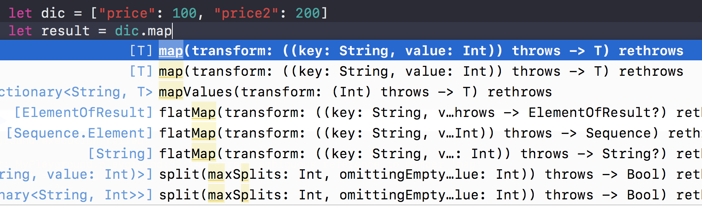

asdfasfssfsaf
Swift Collections
使用 Map, filter, reduce 对 swift 集合进行操作。
使用我们熟悉的 for-in 循环也是可以达到目的的，但是如果你掌握了这些特性，将会是你更方便对集合进行操作，是代码更加简洁。
Map
使用 map 遍历，他会对数组中每个数据进行操作，返回一个数组，对应相应的变换结果.
使用原来的方法 for - in 方法
|
|
使用 map
|
|
解说：
map函数有一个参数，是一个闭包函数，在循环集合是调用它，这个闭包将集合的元素作为参数，并返回结果。map将这些结果放回到一个数组中。1234let values = [2.0, 4.0, 6.0, 8.0]let result = values.map { (value) -> Double inreturn value * value}
代码还可以简化成这样
|
|
甚至我们可以省略 return1234let values = [2.0, 4.0, 6.0, 8.0]let result = values.map { value invalue * value}
in 关键字将参数从闭包体中分离出来。最后可以写成这样
|
|
结果的类型不限于原始数据的类型，下面这个是将整个类型映射到字符串类型
|
|
map 不仅仅能操作数组，它也可以操作字典，然后返回一个数组**
|
|
如果你不知道闭包的参数类型，Xcode是会给与提示的，快速提示可以让你更明白参数到底是什么类型。

可以同时给如 Int 和 Double, map 会返回一个 Double 类型的数组
|
|
filter
使用filter， 会筛选符合条件的数据，匹配的数据包括进含有这些元素
filter 有一个指定包含条件的参数，这事一个闭包，他讲来自集合的元素作
为参数，他会返回一个 Bool 值。
|
|
reduce
使用 reduce ，可以集合中的所有项目合并来创建一个新值。
reduce 有两个值，一个初始化值，一个闭包值。
|
|
初始化值：10 结果：3212let values: [Double] = [1.0, 4.0, 6.0, 11.0]let result = values.reduce(0) { $0 + $1}
初始化值：0 结果：22
使用 reduce 可以连接字符串
|
|
FlatMap
flatMap 可以将一个一系列的集合，平铺开来。
|
|
flatMap 可以去掉数组中 nil 的元素
|
|
对于在对一系列集合做平铺时，我们可以对结果进行筛选处理
|
|
或者是12345let values = [[1,2],[3,4],[5,6]]let result = values.flatMap {$0.map{ $0*$0 }}// [1, 4, 9, 16, 25, 36]
把一系列集合相加，最终的到一个值
|
|
总结一哈：
map返回一个Array包含将结果应用于每个项目的结果。filter返回Array仅包含与包含条件相匹配的项目。reduce通过调用每个项目的组合闭包以初始值返回单个值。
pull和fetch的区别
git pull和fetch的区别
git fetch origin 会抓取从你上次克隆以来别人上传到此远程仓库中的所有更新（或是上次 fetch 以来别人提交的更新）。有一点很重要，需要记住，fetch 命令只是将远端的数据拉到本地仓库，并不自动合并到当前工作分支，只有当你确实准备好了，才能手工合并。
git pull 命令自动抓取数据下来，然后将远端分支自动合并到本地仓库中当前分支。在日常工作中我们经常这么用，既快且好。实际上，默认情况下 git clone 命令本质上就是自动创建了本地的 master 分支用于跟踪远程仓库中的 master 分支（假设远程仓库确实有 master 分支）。所以一般我们运行 git pull，目的都是要从原始克隆的远端仓库中抓取数据后，合并到工作目录中的当前分支。
删除远程分支命令解读
Git 使我们经常在项目中使用的版本管理工具之一，初次使用删除远程分支的命令感到很奇怪，命令是这样的：1git push origin :topic
topic 是我的一个分支，
git 推送远程分支格式：1git push origin <src>:<dst>
git 推送远程分支示例命令:1git push origin master:topic
意思为：将 master 内容推送到 topic 分支上
如果用1git push origin :topic
因为推送远程分支的格式是 git push origin <src>:<dst>, 通过把
Protocol buffer for iOS
Protocol buffer 简单简介
protocol buffer是Google发布的轻便高效的结构化数据存储格式，与平台无关，内部采用了特殊的算法，让数据包边的更小，如果在网络传输时，有可能你会用到它。官方网址
这里只讲如何引用, 不讲过多代码
原理
可以参考这个文章，将的很详细。原理
支持平台
期初支持很少的平台，但是目前已经支持很多平台，诸如：Java, Object-c, Pythod, PHP 等。
具体可以在这里找到支持平台，当然git项目的简介里面也会讲到支出的平台。
使用
具体使用有两种方式
- 使用CocoaPod, 具体操作可以看这里的文章。
- 使用源码添加到项目
我们着重讲一下，具体用代码的方式添加使用。
Protoc 安装
在这之前我们需要安装一些工具包，这些工具包都是本地生产 Protoc 命令所要使用到的。在使用 protoc 生成文件之前，必须确保安装了以下工具包。不然就不会成功。具体安装命令
|
|
具体生成 protoc
去官网下载源码后，分别运行一下命令：
|
|
安装完毕，不出意外，在就可以在 iTerminal 里面打出 protoc
具体：
生产protocol文件
- 创建
.proto文件，具体格式数据类型要求可以参考 encoding[Note: proto3 和 proto2 规范是不同的] - 这里我就创建了两个字段，文件名称为
Person.proto
- 运行
protoc --proto_path=. --objc_out=. Person.proto会生产两个文件Person.pbobjc.h和Person.pbobjc.m
项目引用
建立项目 ProtocolBF
在项目里面创建 ProtocloBufferFile 文件夹
把 protobuf-3.4.0/objectivec 下的全部内容复制到
ProtocloBufferFile 文件夹中 (你可以自行去掉Test部分，当然也可以不去掉，这取决于你)
在项目里面添加文件
添加
libProtocolBuffers.a
添加
Header search paths格式为：$(PROJECT)/存放protobuf文件的目录名称，在这里是ProtocloBufferFile，也就是$(PROJECT)/ProtocloBufferFile
然后添加生成的Person.pbobjc.* 文件以及 Person.proto 文件, 因为 他不支持Arc 所以的加上
-fno-objc-arc然后编译成功。
具体应用代码
这里主要讲了引用，具体用法还得自己去研究哦！

代码Github
Rust
Rust 是一个注重安全与速度的现代系统编程语言。
过多的不说了，本章说说如何安装环境，并运行第一个 Hello, Rust
Rust官方地址
中文资料
安装
|
|
然后1234$ mkdir ~/projects$ cd ~/projects$ mkdir hello_world$ cd hello_world
创建一个以.rs 结尾的文件例如: hello_world.rs, 在里面添加文字123fn main() { println!("Hello, world!");}
然后
|
|
之后就会出现Hello, world
grep(常用)
grep是一个很大的命令，可以搜索文件，也可以搜索一个文本内的字符，使用过的人相信一定会喜欢上她 ^_^。
常规
先简单介绍几个常用的参数。12345678910111213-i (ignore-case) 忽略大小写-n (line-number) 显示行号-c (count) 统计次数-r 递归查找-o 只显示查找到的项-v 反转查找-W 精确查找
比如我现在要查找Pay.h里面’pay’字符出现了多少次。1cat Pay.h | grep -c "pay"
再如，我查找一个文件里面的字符‘pay’,不管大小都统计出来1cat Pay.h | grep -c -i "pay"
如果要显示行号，那么加上-n即可。1cat Pay.h | grep -n "pay"
例如：我要查找不是以#开始的行1cat Pay.h | grep -v "#"
例如：我要查找”inet”1ifconfig | grep -w "inet"
grep的正则表达式
|
|
例如：查找所有以##开头的行1cat Pay.h | grep -n "^##"
例如：查找文件里，所有以逗号结束的行1cat Pay.h | grep -n "。$"
文件查找
例如我要查找当前目录及其子目录的所有png图片1grep .png . -r -n -o
find 的使用
find使用
find使我们经常使用的一个命令，也是很简单的一个命令。学习他，有利于提供我们的工作效率哦。（着一片文章记载的，有一些是和上一章文章中的grep,结合使用的）
比如：我要查找一首MP3,名字叫：末班车的歌曲1find . -name "*.mp3" | grep -i 末班车
其中|的作用是，把find查找的结果传递给后面的命令使用。
例如：查找mp3，但是不要出现”kugou” “timedo” “time do” “shuangyue” “网易” “PomodoroWorks” “番茄” 这些字样，意思为，不要显示这些文件目录中的mp3。1find . -name "*.mp3" | grep -v -i 'kugou\|timedo\|time do\|shuangyue\|网易\|PomodoroWorks\|番茄’
上面这个等同于1find . -name "*.mp3" | egrep -v -i 'kugou|timedo|time do|shuangyue|网易|PomodoroWorks|番茄'
例如:我想在一条grep命令中查找‘linuxtechi’和‘root’单词，使用-e参数，我们可以查找多个模式。1grep -e "linuxtechi" -e "root" /etc/passwd
|
|
查找“tecmint.txt” 然后删除掉1find . -type f -name "tecmint.txt" -exec rm -f {} \;
查找以”.txt”结尾的文件，然后全部删除掉1find . -type f -name "*.txt" -exec rm -f {} \;
忽略大小写查找1find . -iname "*.txt"
当前目录及其子目录查找所有以.txt 和 .pdf结尾的文件1find . -name “*.txt” -o -name “*.pdf”
在工作中，经常遇到要把查到的东西写入到一个文件中，可以使用这个命令1Find . -type f -name “*.txt” -exec cat {} \;>out.txt
等同于1find . -name "*.txt" | tee out.txt
把查到的文件cp到另一个目录1find . -type f -name "*.mp3" -exec cp {} /Users/kare/Desktop \;
find and sed
sed 格式如下
sed -i “.文件类型” “s/被替换之前的内容/要替换的内容/g”
使用 -i 才会写入文件
此命令用到了find，sed.这句的意思是查找当前目录及其子目录的.m文件，然后把
“@end -(BOOL)needInputView{ return NO; }”
改成
“-(BOOL)needInputView{ return NO; } @end”1find . -name "*.m" -type f | xargs sed -i ".m" "s/@end -(BOOL)needInputView{ return NO; }/-(BOOL)needInputView{ return NO; } @end /g”
这句的意思是查找当前目录及其子目录的.m文件，然后找出文件中有“手动输入”字样的文件1find . -name "*.m" -type f | xargs grep -r "手动输入"
tee(额外)
tee将数据重定向到文件中。
意思为将ls显示的结果写到out.txt文件中1ls | tee out.txt
意思为将ls显示的结果写到out.txt文件中,并显示行号1ls | tee out.txt | cat -n